Please wait, while our marmots are preparing the hot chocolate…
=Meta=[*no-status]
* Introduction to Fisher Kernel
* Introduction to Fisher Kernel/Vectors for Image classification
* M1 internship: Fisher Kernel for Temporal Topic Models
====[title-slide][*no-status][image-full]
*
*
==Simple Quiz!==
=How similar are these two 2d points?=
// color does not matter
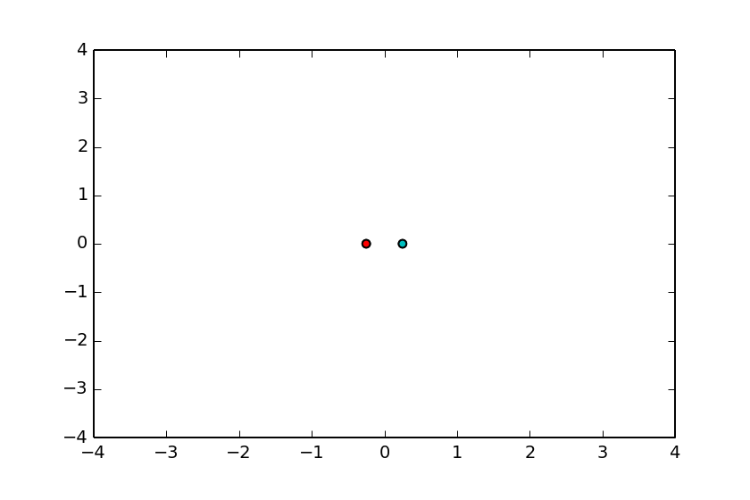
=WAT?=[image-full][top-left][darkened][*no-status][*black-bg]
=Which pair of points are most similar?=
// color does not matter
@
A: narrow 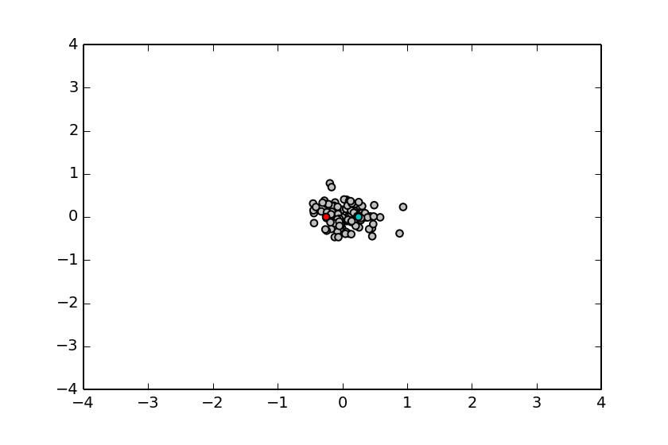
B: wide 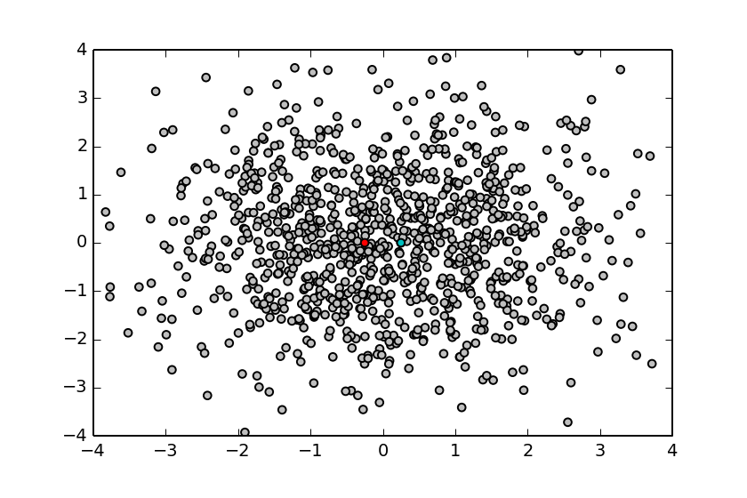
@
=Fisher Kernel:
context-aware comparison of points=[*no-status][image-full][bottom-left][darkened][*black-bg]
// This is the intuition: comparing points given a global distribution (within a context)
==Probably Just Some Reminders==
=Some Probability Rules, Measure Theory=
@svg: floatrightbr,aa proba/potato-xandy.svg 245px 135px
@svg: floatrightbr,bb proba/potato-xsumy.svg 245px 285px
* Product rule[prod]
** $p(X, Y) = p(X|Y) \, p(Y)$ = $p(Y|X) \, p(X)$
* Marginalization, Sum rule[sum]
** $p(X) = \sum_{Y \in \mathcal{Y}} p(X,Y)$
** $p(X) = \int_{Y \in \mathcal{Y}} p(X,Y)$
* Bayes rule[bayes]
** $p(Y|X) = \frac{p(X|Y) \, p(Y)}{p(X)}$
** $p(X) = \sum_{Y\in \mathcal{Y}} p(X|Y) \, p(Y)$[denom]
@anim-appear:800: .aa + .prod | .bb + .sum | .app | .bayes | .denom
=Gaussian/Normal Distribution: basics=
@svg: floatrightbr,fullabs gaussian/normal-distribution-stddev.svg 800px 500px
=Gaussian/Normal Distribution: basics=
@svg: floatrightbr gaussian/normal-distribution-stddev.svg 200px 200px
* Normal Distribution or Gaussian Distribution[bb]
** $N(x|\mu,\sigma^2) = \frac{1}{\sqrt{2\pi \sigma^2}} exp(-\frac{(x-\mu)^2}{2 \sigma^2})$
** Is-a probability density[bbb]
** $\int_{-\infty}^{+\infty} N(x|\mu,\sigma^2) dx = 1$[bbb]
** $N(x|\mu,\sigma^2) > 0$[bbb]
* Parameters[cc]
** $\mu$: mean, $E[X] = \mu$
** $\sigma^2$: variance, $E[(X -E[X])^2 ] = \sigma^2$
@anim-appear:800: .bb |.bbb |.cc
=Multivariate Normal Distribution=
* D-dimensional space: $x = \{x_1, ..., x_D\}$
* Probability distribution[slide]
** $N(x|\mu,\Sigma) = \frac{1}{\sqrt{(2\pi)^D \|\Sigma\|}}\; exp(-\frac{(x-\mu)^T\Sigma^{-1}(x-\mu)}{2})$
** $\Sigma$: covariance matrix
@svg: floatleft gaussian/multivariate-normal.svg 800px 250px
@anim-appear:400: .hasSVG
==Probabilistic Models
and
Statistical Learning==
=Maximum Likelihood Estimation=
* We observe data points[slide]
** e.g., $\{ X_i \}_{i=1..N} \in R^N$
* We suppose a model (with parameters)[slide]
** e.g., $\forall i, X_i \sim N(.|\mu,\sigma^2)$
* We may try to maximize the likelihood
(find the “best parameters”)[slide]
** e.g., $\operatorname{arg max}_{\mu, \sigma^2} \mathcal{L}(\mu, \sigma^2 | X) = \operatorname{arg max}_{\mu, \sigma^2} p(X | \mu, \sigma^2) $
// what about priors? could be a two-hour discussion :)
* We often maximize the log-likelihood[slide]
** e.g., $\operatorname{arg max}_{\mu, \sigma^2} \mathcal{L}(\mu, \sigma^2 | X) = \operatorname{arg max}_{\mu, \sigma^2} \log \mathcal{L}(\mu, \sigma^2 | X)$
** e.g., $\log p(X | \mu, \sigma^2) = \log \prod_{i=1..N} p(X_i | \mu, \sigma^2) = \sum_{i=1..N} \log p(X_i | \mu, \sigma^2)$[slide]
** ⇒ equivalent, more convenient[slide]
=Maximization of the Log-Likelihood=
* We need to maximize $\log \mathcal{L}(\mu, \sigma^2 | X) = \log p(X | \mu, \sigma^2)$
* We set the derivatives to $0$ and solve it[slide]
** e.g., $\frac{\partial \log p(X | \mu, \sigma^2)}{\partial \mu} = 0$ and $\frac{\partial \log p(X | \mu, \sigma^2)}{\partial \sigma^2} = 0$
* Example, with a Gaussian: $p(X_i | \mu, \sigma^2) = \frac{1}{\sqrt{2\pi \sigma^2}} \exp^{(-\frac{(x-\mu)^2}{2 \sigma^2})}$[slide]
** we get $\mu = \frac{1}{N}\sum_{i=1..N} X_i$ and $\sigma^2 = \frac{1}{N}\sum_{i=1..N} (X_i - \mu)^2$
* The problem can also be written using the gradient[slide]
** $\nabla_{\mu,\sigma^2} \log \mathcal{L}(\mu, \sigma^2 | X) = \vec{0}$
** the gradient is also called the Fisher Score, noted (here) $U_{X}$[slide]
// $U_X(\mu, \sigma^2)$
=Understanding the Fisher Score=
* Fisher Score: $\nabla_{\theta} \log \mathcal{L}(\theta | X) = U_X(\theta)$
* A function of $\theta$, considering $X$ fixed[slide]
* How data points $X$ want to change the parameters $\theta$ ?[slide]
// how the data wants to tune/update the model
** $X$ is known
** $\theta$ is known
** (considers a given model, with its parameters given)
* (( Maximum likelihood estimation by gradient descent ))[slide]
** we look for the best model ($\theta$ unknown)
** evaluate the score (gradient) in the current estimate $\theta_t$
** compute the next estimate $\theta_{t+1}$
=Fisher Kernel for Probabilistic Models=
* Kernel trick
** goal: generalize linear algorithms to non-linear spaces
** given some input points ${X_i}$ (in any dimension)[slide][anim-continue]
** manipulate similarities given from a kernel $K(X_i, X_j)$
(instead of the points)[slide]
* Fisher Kernel: a kernel from a prob. mod.[slide]
** compare data points
** in the context of a model with parameters $\theta$ (e.g., $\{\mu,\sigma^2\}$)
** $K(X_i, X_j) = U^T_{X_i} I^{-1} U_{X_j} = \nabla^T \log \mathcal{L}(\mu, \sigma^2 | X_i) \; I^{-1} \; \nabla \log \mathcal{L}(\mu, \sigma^2 | X_j)$[slide]
// Actually I(\theta)
** $I$ : Fisher Information Matrix (normalizer)[slide]
** $I$ is a kind of normalization factor : $I = \E_{X}[U_{X} U_{X}^T]$[slide]
** “sometimes” $I_{ij} = -\E[\frac{\partial^2 \log \mathcal{L}(\theta)}{\partial \theta_i \partial \theta_j}]$[slide]
=Which pair of points are most similar?=
// color does not matter
@
=Example: narrow vs wide=
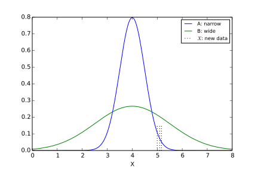
=Example: mixture of gaussians=
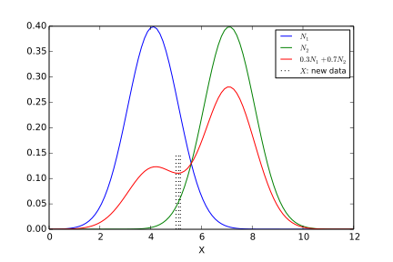
=Why $\frac{\partial \log \mathcal{L}}{\partial\theta}$ and not $\frac{\partial \log \mathcal{L}}{\partial X}$?=
@anim-appear:400: img
* Other: is $X$ continuous? map-able between instances? …[slide]
=Why $\frac{\partial \log \mathcal{L}}{\partial\theta}$ and not $\frac{\partial \mathcal{L}}{\partial \theta}$?=
* Derivative of the log: $(\log f)^' = \frac{f^'}{f} $[slide]
* ⇒ normalized/relative gradient[slide]
=Questions? Comments?=[image-fit][bottom-left][darkened][deck-status-fake-end]
@
=Coffee Time!=[*no-status][image-full][top-left][darkened][*black-bg][deck-status-fake-end]
=Fisher Vectors for Image Classification ⇒=[title-slide][*no-status][image-full][*black-bg][top-left][darkened]
=Next: Fisher Kernel
from Temporal Mixture Models=[*no-status][image-full][bottom-left][darkened][*black-bg]
=Temporal Mixture Models=[*no-status][image-full][bottom-left][darkened][*black-bg]
/* ============= TEMPORAL MIXTURE MODELS ============= */
=Task: Unsupervised Motif Mining=
@SVG:owbg motif-mining/motif-mining-task.svg 750 400
@anim-appear:400: #layer1 + -#init | #layer2 | #layer3 | #layer7 | #layer4 | #layer6 | #layer5
/* ------------- PLSM THEN ---------------- */
=Probabilistic Latent Sequential Motifs=
@svg:owbg past-temporal-approaches/plsm-process.svg 780px 500px
@anim-appear:600: div.owbg | #g4915 | #rect3279 | #rect3279-0 | #rect3279-0-3 | #g5010 | -#rect3279,#rect3279-0,#rect3279-0-3,#g5010 | #g5123 | -#g5123 | -#g4915 | #g4915-8 | -#g4915-8 | #g4915-8-4 | -#g4915-8-4
=PLSM Graphical Model=
@svg:owbg,floatright time-models/plsm-model-3.svg 300px 400px
* Observations (time instant and word)
within a document: $(w,t_a)$
* Motifs: $\forall k \; \phi_k$ ≡ $p(w,t_r|z=k)$[slide]
* Start/occurrences of motifs
within a document: $(z,t_s)$[slide]
/* ------------- VIDEO CASE ---------------- */
=Video Case: Full Process=
@SVG:owbg,space10 video-mining/process-full.svg 780px 470px
@anim-appear:400: #layer1 | #shortll | #tdocetc
@anim-appear:400: #shorttm | #layer7 | #layer5
@anim-appear:1000: #layer6 + -#layer3 + @#flow1
@anim-appear:600: @#flow2 | @#flow3 | -#layer6 + @#box1 + #layer2
@anim-appear:1000: @#box2
@anim-appear:1000: @#box3
/* ------------- VIDEO CASE: REPRESENTATION ---------------- */
=Video Case: motif representation=
@SVG:fullsvg motif-repr/repr-motif.svg 780px 350px
@anim-appear:400: #motiftable | #rt0 | #rt1 | #rt2 | #rt3 | #rt4 | #rt5 | #giffy | -#giffy | #arrow + #magic
/* --------- KUETTEL --------- */
=Extracted Motifs: Kuettel3=[img3inwidth][shy]
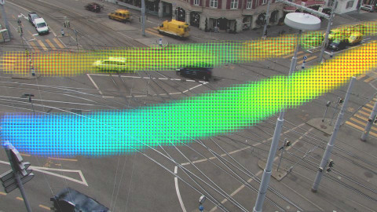
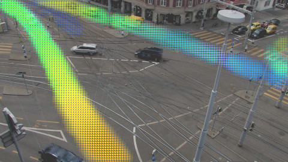
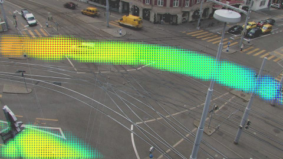
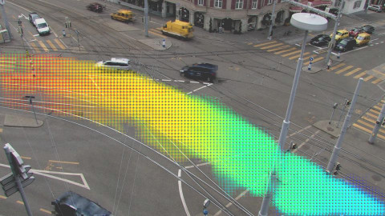
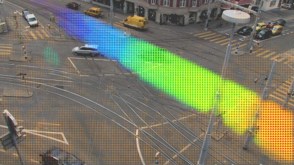
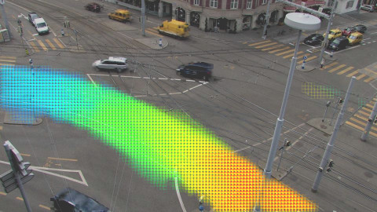
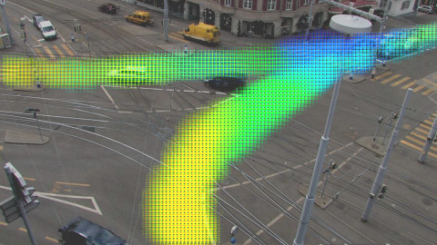
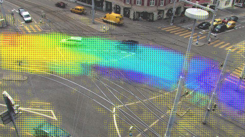
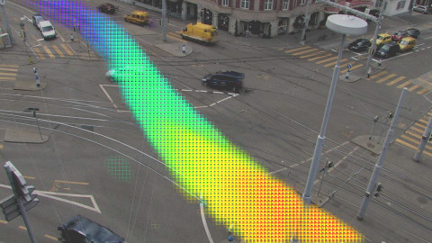
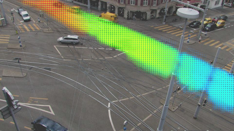
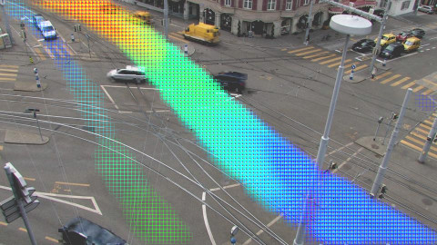
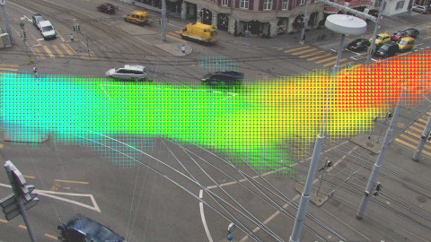
+
/* ------------- ACTION RECOGNITION IN VIDEOS ---------------- */
==Action Recognition in Videos==
=Motifs for Action Recognition=
@SVG:owbg action-recognition/explain.svg 780px 300px
// * Better generalization properties[title]
* Extract STIP
** spatiotemporal interest points
** like SIFT but with 2D+t cubes
* Learn temporal patterns of words (quantified STIP)
@CSS: .slide .hasSVG.dakth {margin-top: 15px;}
@CSS: .slide .hasSVG.kthpos {position: absolute; left:180px; top:58px;}
=Supervised Action Recognition=
@SVG:owbg action-recognition/overview-learning.svg 780 300
@SVG:owbg,dakth action-recognition/overview-test.svg 780 200
@SVG:wbg,kthpos action-recognition/kth_ntrain.svg 500 400
@anim-appear:700: .dakth | .kthpos
=Temporal Topic Models for Classification=
* Tested on action recognition
* To make it work for classification
** need to learn one model per class
** need to have very little learning data
/* -------- FISHER FOR PLSM --------- */
==Fisher Kernel/Vector
From Temporal Topic Models==
=Approach and Goal=
* Goal[slide]
** improve discrimination power of temporal topic models (PLSM, ...)
* Approach[slide]
** derive a Fisher Kernel from these models
** learn classifiers using the kernel
** and/or manipulate Fisher Vectors directly[slide]
* Expected outcome[slide]
** no supervision at training
** better classification accuracy
** model-aware analysis of document similarity
(more in next slides)
=Datasets for Classification of Time Series=
* Pure classification
** action recognition
*** STIP words across time
** music genre recognition
*** spectrograms
* Bird songs analysis, whales, …
** features
*** spectrograms
*** MFCC across time
=Probabilistic Latent Sequential Motifs=
// What are the parameters?
@svg:owbg past-temporal-approaches/plsm-process.svg 780px 500px
@anim-appear:300: div.owbg | #g4915 | #rect3279 | #rect3279-0 + #rect3279-0-3 + #g5010 + -#rect3279,#rect3279-0,#rect3279-0-3,#g5010 + #g5123 + -#g5123 + -#g4915 + #g4915-8 + -#g4915-8 + #g4915-8-4 + -#g4915-8-4
=Reminder: parameters in PLSM=
@svg:owbg,floatright time-models/plsm-model-3.svg 300px 400px
* Parameters[slide]
** global, motifs: $\forall k, \phi_k = p(w,t_r | k)$
** per document: $\forall d, \theta_d = p(z,t_s | d)$
* Variation of motif weights ($\theta$)
** $p(z | d) = \sum_{t_s} p(z, t_s|d)$
** Amount of motif in each document
* Variation of motif shapes ($\phi$)
==The End==
←
→
/ − will be replaced by author − will be replaced by the title